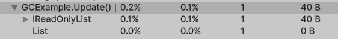

Dr. GCAlloc or: How I Learned to Stop Worrying and Love List<T>
In this short blog entry, I will try to convince you that using the IReadOnlyList contract is sometimes not worth it. Especially in hot paths or projects that require high runtime performance, it is often better to use the regular List. The reason is the foreach loop, which unfortunately introduces GC allocations when used with IReadOnlyList, regardless of the underlying type. Of course, users can avoid these allocations by using a regular for loop (or by providing a custom enumerator via an extension method). However, this is somewhat counterintuitive, since foreach implies that the iterated collection is read-only and that modifying it will throw an exception.
The obvious downside is that users must remember to use either an extension method or a for loop. Instead of worrying about these rules, one may simply stop worrying and learn to love List Ideally, ReadOnlySpan<T> would be the best choice here since it provides allocation-free iteration with read-only semantics. Unfortunately, in Unity it is still inconvenient to use because casting from List<T> to ReadOnlySpan<T> is not straightforward., as the blog title suggests. This does not mean that IReadOnlyList should never be used. In most applications the GC allocation is negligible, but e.g. in Unity hot paths even small per-frame allocations may become problematic. Below you can find a simple Unity code sample that I used to measure and test GC allocations.
using System.Collections.Generic;
using System.Linq;
using Unity.Profiling;
using UnityEngine;
public class GCExample : MonoBehaviour
{
private IReadOnlyList<int> List => list;
private readonly List<int> list = new();
private void Start()
{
list.AddRange(Enumerable.Repeat(default(int), 64));
}
private void Update()
{
using (var _ = new ProfilerMarker(nameof(IReadOnlyList<int>)).Auto())
{
foreach (var i in List) { }
}
using (var _ = new ProfilerMarker(nameof(List<int>)).Auto())
{
foreach (var i in list) { }
}
}
}After attaching the script to a GameObject, you can measure GC allocations using the Unity Profiler. The results are presented in Figure 1. An empty foreach loop over IReadOnlyList allocates 40B every frame. In contrast, a foreach loop over a regular List allocates 0B.

One may ask: what is the reason for this behavior? The answer becomes immediately clear after inspecting the code to which the foreach loop compiles. You can check this yourself using tools such as SharpLab or other IL inspection tools. A List uses List<T>.Enumerator, which is allocation-free enumeration struct. In contrast, IReadOnlyList uses IEnumerator<T> contract. The allocation happens because iteration over the interface-based IEnumerator<T>. This prevents the compiler from using the allocation-free struct enumerator provided by List<T>, which in turn causes boxing and GC allocations.